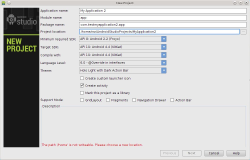
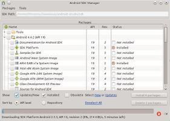
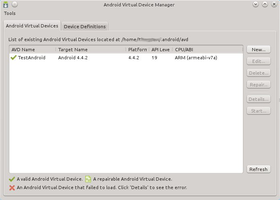

Android Studio
Dieser Artikel wurde für die folgenden Ubuntu-Versionen getestet:
Ubuntu 14.04 Trusty Tahr
Zum Verständnis dieses Artikels sind folgende Seiten hilfreich:
Android  ist ein von Google bereitgestelltes freies Betriebssystem für Mobilgeräte wie bspw. Smartphones und Netbooks. Entwickelt wird es von der Open Handset Alliance . Anwendungen werden vornehmlich in Java programmiert. Eine (teilweise) Programmierung in C ist ebenfalls möglich, jedoch kann man keine selbständigen Programme (Apps) damit schreiben, sondern nur einzelne Unterprogramme, die dann von einem Java-Programm gestartet werden (siehe Android NDK).
ist ein von Google bereitgestelltes freies Betriebssystem für Mobilgeräte wie bspw. Smartphones und Netbooks. Entwickelt wird es von der Open Handset Alliance . Anwendungen werden vornehmlich in Java programmiert. Eine (teilweise) Programmierung in C ist ebenfalls möglich, jedoch kann man keine selbständigen Programme (Apps) damit schreiben, sondern nur einzelne Unterprogramme, die dann von einem Java-Programm gestartet werden (siehe Android NDK).
Mittels des Android Studios kann man – bei entsprechenden Programmierkenntnissen – schnell eigene Apps für Android entwickeln und auf dem eigenen Rechner testen. Google beansprucht keinerlei Rechte an der Software, die man entwickelt hat. Insbesondere steht es einem frei, die eigenen Programme unter die GPL, eine andere OpenSource-Lizenz oder eine proprietäre Lizenz zu stellen.
Android Studio basiert auf IntelliJ IDEA und ersetzt seit 2014 das von Google angebotene und auf Eclipse basierende "ADT Bundle". Letzteres wird nicht mehr offiziell unterstützt. Eine Migrationsanleitung unterstützt beim Umstieg auf Android Studio.
Voraussetzungen¶
Ubuntu 14.04¶
Als Voraussetzung muss eine Entwicklerversion von Java 7 oder höher installiert sein. Prinzipiell kann das in den offiziellen Paketquellen verfügbare OpenJDK verwendet werden. Bei Bedarf kann man ein zusätzliches Java-SDK später nachinstallieren.
openjdk-7-jdk
 mit apturl
mit apturl
Paketliste zum Kopieren:
sudo apt-get install openjdk-7-jdk
sudo aptitude install openjdk-7-jdk
Ubuntu 16.04¶
Als Voraussetzung muss eine Entwicklerversion von Java 8 oder höher installiert sein. Prinzipiell kann das in den offiziellen Paketquellen verfügbare OpenJDK verwendet werden. Bei Bedarf kann man ein zusätzliches Java-SDK später nachinstallieren.
openjdk-8-jdk
mit apturl
Paketliste zum Kopieren:
sudo apt-get install openjdk-8-jdk
sudo aptitude install openjdk-8-jdk
Seitens des Betreibers des PPA wird jedoch Oracle Java 8 JDK empfohlen, besonders dann, wenn Probleme auftreten.
Unter Umständen müssen für 64-Bit-Systeme zusätzlich die folgenden Pakete installiert werden:
libc6-i386
lib32stdc++6
lib32gcc1
lib32ncurses5
lib32z1
lib32z1-dev
mit apturl
Paketliste zum Kopieren:
sudo apt-get install libc6-i386 lib32stdc++6 lib32gcc1 lib32ncurses5 lib32z1 lib32z1-dev
sudo aptitude install libc6-i386 lib32stdc++6 lib32gcc1 lib32ncurses5 lib32z1 lib32z1-dev
|  |
| Android Studio - Neues Projekt |
Installation¶
Um Installation automatisch über die Paketverwaltung erledigen zu lassen, empfiehlt sich die Nutzung eines inoffiziellen PPAs.
Adresszeile zum Hinzufügen des PPAs:
ppa:maarten-fonville/android-studio
Hinweis!
Zusätzliche Fremdquellen können das System gefährden.
Ein PPA unterstützt nicht zwangsläufig alle Ubuntu-Versionen. Weitere Informationen sind der  PPA-Beschreibung des Eigentümers/Teams maarten-fonville zu entnehmen.
PPA-Beschreibung des Eigentümers/Teams maarten-fonville zu entnehmen.
Damit Pakete aus dem PPA genutzt werden können, müssen die Paketquellen neu eingelesen werden.
Paketliste zum Kopieren:
sudo apt-get install android-studio
sudo aptitude install android-studio
Nach der Installation kann die Entwicklungsumgebung über /opt/android-studio/bin/studio.sh gestartet [2] werden, sofern automatisch kein Menüeintrag erstellt wurde[1]. Ein Dialog hilft bei der Erstellung eines neuen Projekts. Wie beim ADT Bundle muss ggf. die gewünschte Android-Zielplattform heruntergeladen werden, bevor ein Projekt ausgeführt werden kann. Sofern bereits ein virtuelles Gerät zur Simulation erstellt wurde, kann das Projekt über das Menü "Run -> Run" gestartet und getestet werden.
Für weitere Informationen sei auf die Anleitung der Android-Entwicklerseite verwiesen.
Das Paket kann alternativ auch von der Herstellerseite  heruntergeladen und in ein beliebiges Verzeichnis entpackt [1] werden.
heruntergeladen und in ein beliebiges Verzeichnis entpackt [1] werden.
Hinweis!
Fremdsoftware kann das System gefährden.
Konfiguration¶
|  |  |
| SDK Manager | AVD Manager |
Android SDK Manager¶
Über den Android SDK Manager können verschiedene Android-Versionen als Zielplattform nachinstalliert werden. Durch Klick auf das entsprechende Symbol in der Werkzeugleiste öffnet sich ein Dialog, über den die gewünschte Version, Beispiele und weitere Hilfswerkzeuge installiert werden können.
Android Virtual Device Manager¶
Bevor man ein erstelltes Projekt testen kann, muss ein virtuelles Androidgerät installiert werden. Dies geschieht über den "Android Virtual Device Manager", welcher über das entsprechende Symbol in der Werkzeugleiste aufgerufen werden kann.
Nach dem Start des Managers klickt man auf "New", trägt einen beliebigen Gerätenamen ein und wählt unter "Target" die gewünschte Android-Plattform, die man vorher installiert hat. Zusätzlich können der verfügbare Speicherplatz ("SD Card") und der gewünschte Bildschirm ("Skin") gewählt werden, zusätzlich können verschiedene (virtuelle) Hardwarekomponenten de- oder aktiviert werden. Hat man alle Einstellungen ausgewählt,  auf "Ok", und man kann die erstellte Plattform durch auf "Start" testen. Achtung: Das Starten kann einige Minuten in Anspruch nehmen!
auf "Ok", und man kann die erstellte Plattform durch auf "Start" testen. Achtung: Das Starten kann einige Minuten in Anspruch nehmen!
Android NDK¶
Das Android NDK ist hier nur der Vollständigkeit halber erwähnt. Mittels des NDKs können Teile einer Android-Anwendung in C programmiert werden. Verwendung findet es in erster Linie für Anwendungen, die sehr prozessorabhängig sind. Zusätzlich bietet sich diese Variante an, falls man eine umfangreiche C-Anwendung auf Android portieren möchte. Das Paket selbst, Installationsanleitung und Verwendung sind auf der Herstellerseite zu finden.

- Erstellt mit Inyoka
-
 2004 – 2017 ubuntuusers.de • Einige Rechte vorbehalten
2004 – 2017 ubuntuusers.de • Einige Rechte vorbehalten
Lizenz • Kontakt • Datenschutz • Impressum • Serverstatus -
Serverhousing gespendet von